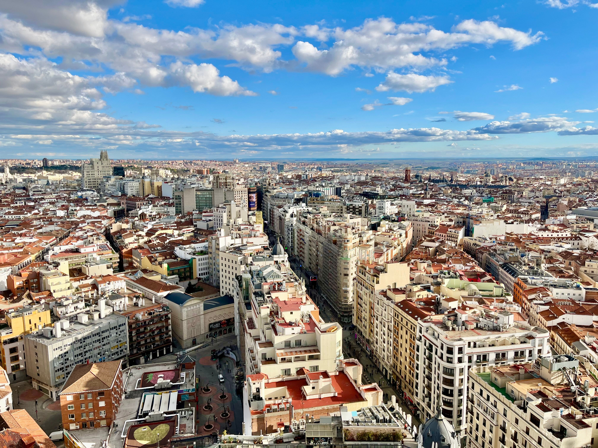

Серце Іспанії, сповнене енергії сонця, монументальної архітектури та гастрономічного життя.
Мадрид — столиця та найбільше місто Іспанії, а також політичний, економічний і культурний центр країни. Розташований на берегах річки Мансанарес у центрі Піренейського півострова. Мадрид славиться своїми величними проспектами, грандіозними королівськими палацами, чудовими парками та всесвітньо відомими колекціями класичного європейського мистецтва.
Мадрид вражає своєю безперервною життєвою енергією. Це місто ніколи не спить у класичному сенсі: тут пізні вечері плавно переходять у вечірні прогулянки жвавими бульварами, а любов місцевих жителів до спілкування, футболу та культури тапас створює неповторну привітну атмосферу. Він відкритий, сонячний і масштабний.
Загальний бал: 9.8 / 10
Неймовірне місто для тих, хто полюбляє поєднання насиченої міської культури, величних пам'яток, зелених парків та щирого іспанського драйву.
Більше інформації про столицю Іспанії читайте на сторінці Вікіпедії про Мадрид.